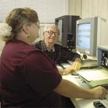

Programs
and
Activities  HOME HOME |
The Center offers a place for visually impaired individuals to participate in a wide array of activities. The Center provides a gathering place to meet and make new friends and an opportunity to interact with others who face similar challenges.
- Independent Living Skills Training
- Computer Training
- Low Vision Aids Demonstrations And Sales
- Braille Instructions
- Referrals
- Arts & Crafts
- Ceramics
- Socials
- Day Trips
- Exercise Classes
- Jacuzzi And Sauna
- Bowling
- Games And Recreation
|